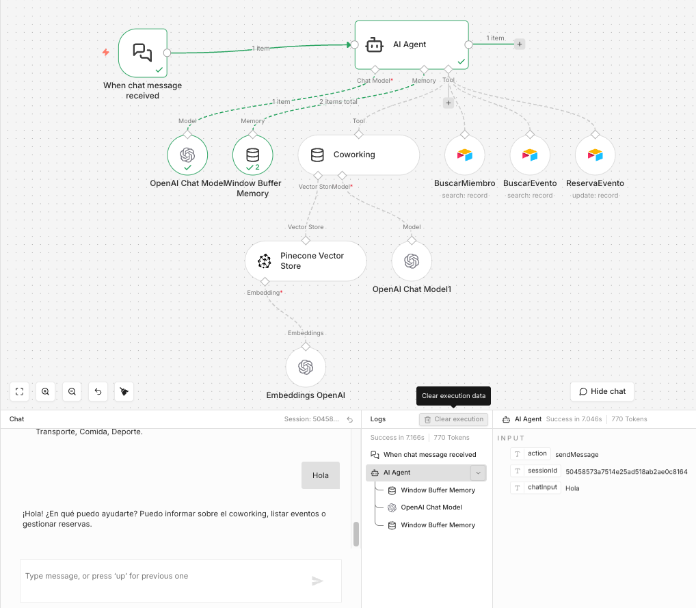

Consulta documental
La normativa del coworking se indexa en un vector store permitiendo al agente responder preguntas sobre horarios, normas y funcionamiento del espacio.

Este agente combina un modelo conversacional, memoria contextual y herramientas conectadas a bases de datos para asistir en la gestión de un espacio de coworking.
Consulta documental
La normativa del coworking se indexa en un vector store permitiendo al agente responder preguntas sobre horarios, normas y funcionamiento del espacio.
Datos estructurados
El agente puede consultar miembros y eventos almacenados en una base de datos para responder preguntas o realizar acciones.
Acciones automáticas
El workflow permite registrar reservas de eventos directamente desde la conversación.
El sistema incluye un segundo workflow dedicado a mantener actualizado el conocimiento del coworking mediante documentos indexados en Pinecone.
Ingesta automática
Los documentos subidos a Google Drive activan el pipeline de procesamiento automáticamente.
Embeddings
El contenido se divide en fragmentos y se transforma en embeddings mediante OpenAI.
Vector database
Los embeddings se almacenan en Pinecone para búsquedas semánticas desde el agente.
Este tipo de workflow puede adaptarse a otros espacios de coworking o comunidades que necesiten automatizar consultas, gestión de miembros o reservas mediante IA.